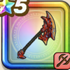

はおうのオノ
攻略班 7.0点 / たいぼく斬まわしげり斬岩撃メタル三連斬森羅万象斬覇王のさきがけ
くわしい特徴
【レベル別習得スキル】 Lv1【バトマス】攻撃力+5 Lv1たいぼく斬（消費MP：5）植物系に威力160%それ以外の系統には130%の斬撃ダメージを与える Lv10まわしげり（消費MP：8）足で周囲をなぎはらい敵全体に威力110%の体技ダメージを与える Lv15斬岩撃（消費MP：24）岩をも切り裂く力で、敵1体に威力340%のジバリア属性斬撃ダメージを与える Lv20メタル三連斬（消費MP：28）敵1体にメタル系なら+7ダメージを3回与え、それ以外には威力140%の斬撃ダメージを3回与える Lv30森羅万象斬（消費MP：37）すべてを断ち割る力で、敵全体に威力330%のギラ属性斬撃ダメージを与える Lv35ゾンビ系へのダメージ+5% Lv40虫系へのダメージ+5% Lv45攻撃力+12 Lv50覇王のさきがけ（消費MP：3）戦闘開始時にたまに誰よりも先に行動できる 【限界突破スキル】 1凸スキルの斬撃・体技ダメージ+5% 2凸スキルの斬撃・体技ダメージ+5% 3凸スキルの斬撃・体技ダメージ+5% 4凸スキルの斬撃・体技ダメージ+5%